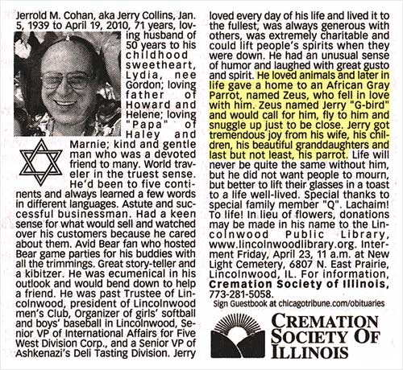
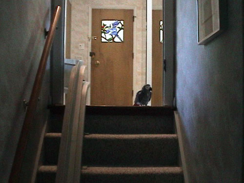

If you’ve seen the video about my mother’s birds, you’ll recognize Jerry Cohan, the man who famously had a love affair with Zeus, the parrot. A number of people have asked me how he and Zeus are doing — I’m sad to report that it’s been almost a year since Jerry died.

When my mother decided to give Zeus up for adoption in 2008, there was little question he would go live with the Cohans. Jerry and Lydia were our longtime family friends and neighbors and had raised numerous parrots and parakeets over the years. They were bird people, like us — here they are with baby Winston some 30 years before:

When Jerry became sick in his final year, Zeus let Jerry handle him in an unprecedented way and spent his days at Jerry’s bedside. Later, in the months after Jerry’s death, Zeus would peer over the top of the stairwell and look for Jerry in his old spot downstairs. We could only assume that he expected Jerry to return. What we couldn’t do was tell Zeus that Jerry was gone for good — you just can’t explain that to a bird.

Zeus still lives with Lydia and Winston in Lincolnwood, Illinois.
I’m very sorry to hear about Jerry. X